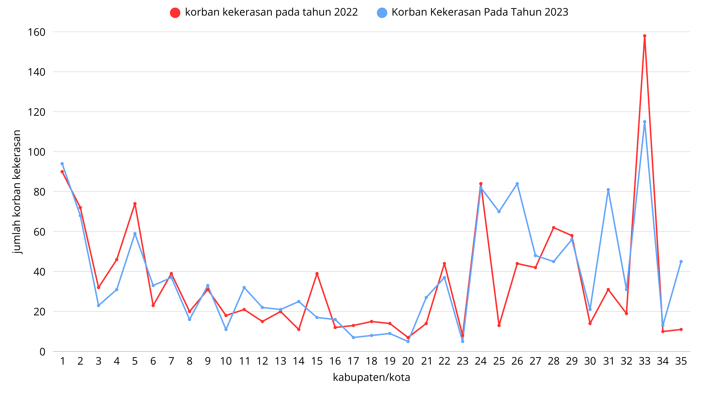

Peta Tematik: 2022 vs 2023
Berikut perbandingan peta interaktif hasil ekspor QGIS pada tahun 2022 dan 2023.
Peta 2022 (Interaktif)
Peta QGIS dari qgis2web
Peta 2023 (Interaktif)
Peta QGIS tahun 2023
Analisis Perbandingan Berdasarkan Data Dari BPS
Berdasarkan data BPS, jumlah korban kekerasan anak di Jawa Tengah mengalami perubahan yang beragam pada setiap kabupaten/kota.
Total kasus 2022 adalah 1.224 kasus, dan tahun 2023 meningkat menjadi 1.327 kasus. Terjadi peningkatan sebesar 103 kasus atau 8,4%.
🔼 Daerah dengan Kenaikan Tertinggi
- Batang: +57 kasus
- Pekalongan: +40 kasus
- Kota Surakarta: +50 kasus
- Kota Tegal: +34 kasus
- Demak: +13 kasus
| Wilayah | Kenaikan |
|---|---|
| Batang | +57 |
| Pekalongan | +40 |
| Kota Surakarta | +50 |
| Kota Tegal | +34 |
| Demak | +13 |
🔽 Daerah dengan Penurunan Tertinggi
- Kota Semarang: –43 kasus
- Grobogan: –22 kasus
- Tegal: –17 kasus
- Purbalingga: –9 kasus
- Banyumas: –4 kasus
| Wilayah | Penurunan |
|---|---|
| Kota Semarang | -43 |
| Grobogan | -22 |
| Tegal | -17 |
| Purbalingga | -9 |
| Banyumas | -4 |
Tabel Perbandingan 35 Kabupaten/Kota Di Jawa Tengah
| No | Kabupaten/Kota | 2022 | 2023 | Selisih | Status |
|---|---|---|---|---|---|
| 1 | Cilacap | 90 | 94 | +4 | ▲ Naik |
| 2 | Banyumas | 72 | 68 | -4 | ▼ Turun |
| 3 | Purbalingga | 32 | 23 | -9 | ▼ Turun |
| 4 | Banjarnegara | 46 | 31 | -15 | ▼ Turun |
| 5 | Kebumen | 74 | 59 | -15 | ▼ Turun |
| 6 | Purworejo | 23 | 33 | +10 | ▲ Naik |
| 7 | Wonosobo | 39 | 37 | -2 | ▼ Turun |
| 8 | Magelang | 20 | 16 | -4 | ▼ Turun |
| 9 | Boyolali | 31 | 33 | +2 | ▲ Naik |
| 10 | Klaten | 18 | 11 | -7 | ▼ Turun |
| 11 | Sukoharjo | 21 | 32 | +11 | ▲ Naik |
| 12 | Wonogiri | 15 | 22 | +7 | ▲ Naik |
| 13 | Karanganyar | 20 | 21 | +1 | ▲ Naik |
| 14 | Sragen | 11 | 25 | +14 | ▲ Naik |
| 15 | Grobogan | 39 | 17 | -22 | ▼ Turun |
| 16 | Blora | 12 | 16 | +4 | ▲ Naik |
| 17 | Rembang | 13 | 7 | -6 | ▼ Turun |
| 18 | Pati | 15 | 8 | -7 | ▼ Turun |
| 19 | Kudus | 14 | 9 | -5 | ▼ Turun |
| 20 | Jepara | 7 | 5 | -2 | ▼ Turun |
| 21 | Demak | 14 | 27 | +13 | ▲ Naik |
| 22 | Semarang | 44 | 37 | -7 | ▼ Turun |
| 23 | Temanggung | 8 | 5 | -3 | ▼ Turun |
| 24 | Kendal | 84 | 82 | -2 | ▼ Turun |
| 25 | Batang | 13 | 70 | +57 | ▲ Naik |
| 26 | Pekalongan | 44 | 84 | +40 | ▲ Naik |
| 27 | Pemalang | 42 | 48 | +6 | ▲ Naik |
| 28 | Tegal | 62 | 45 | -17 | ▼ Turun |
| 29 | Brebes | 58 | 56 | -2 | ▼ Turun |
| 30 | Kota Magelang | 14 | 21 | +7 | ▲ Naik |
| 31 | Kota Surakarta | 31 | 81 | +50 | ▲ Naik |
| 32 | Kota Salatiga | 19 | 31 | +12 | ▲ Naik |
| 33 | Kota Semarang | 158 | 115 | -43 | ▼ Turun |
| 34 | Kota Pekalongan | 10 | 13 | +3 | ▲ Naik |
| 35 | Kota Tegal | 11 | 45 | +34 | ▲ Naik |
Grafik Perbandingan 2022–2023
Berikut grafik perubahan kasus:
